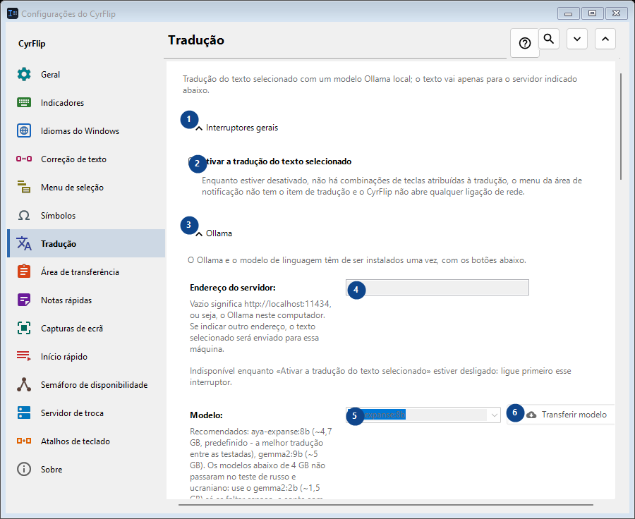
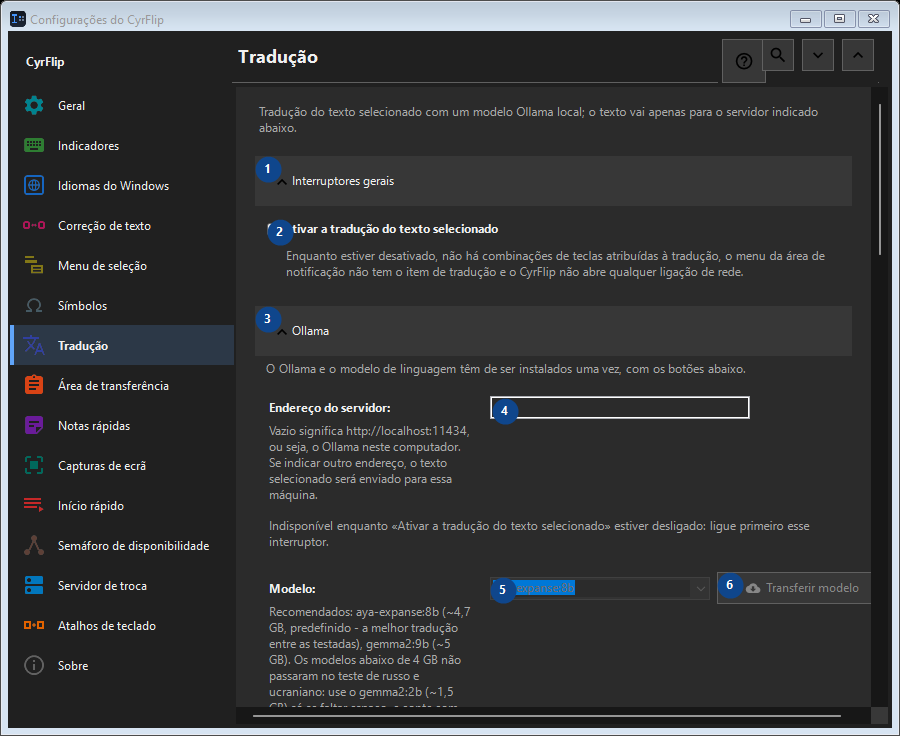

Tradução
Para que serve
Tradução do texto selecionado com um modelo Ollama local; o texto vai apenas para o servidor indicado abaixo.


Ordem de utilização
As definições são aplicadas de imediato. Não existe uma ordem obrigatória; use os grupos abaixo.
Elementos
1. Interruptores gerais
Use este comando para a ação indicada. Leia qualquer confirmação antes de aceitar.
Os seus atalhos2. Ativar a tradução do texto selecionado
Enquanto estiver desativado, não há combinações de teclas atribuídas à tradução, o menu da área de notificação não tem o item de tradução e o CyrFlip não abre qualquer ligação de rede.
Os seus atalhos3. Ollama
Use este comando para a ação indicada. Leia qualquer confirmação antes de aceitar.
Os seus atalhos4. Endereço do servidor
Indisponível enquanto «Ativar a tradução do texto selecionado» estiver desligado: ligue primeiro esse interruptor. Este elemento não está disponível. Ative primeiro a função ou selecione uma entrada.
Os seus atalhos5. Modelo
Indisponível enquanto «Ativar a tradução do texto selecionado» estiver desligado: ligue primeiro esse interruptor. Este elemento não está disponível. Ative primeiro a função ou selecione uma entrada.
Os seus atalhos6. Transferir modelo - Modelo
Indisponível enquanto «Ativar a tradução do texto selecionado» estiver desligado: ligue primeiro esse interruptor. Este elemento não está disponível. Ative primeiro a função ou selecione uma entrada.
Os seus atalhos7. Instalar o Ollama
Indisponível enquanto «Ativar a tradução do texto selecionado» estiver desligado: ligue primeiro esse interruptor. Este elemento não está disponível. Ative primeiro a função ou selecione uma entrada.
Os seus atalhos8. Iniciar o Ollama
Indisponível enquanto «Ativar a tradução do texto selecionado» estiver desligado: ligue primeiro esse interruptor. Este elemento não está disponível. Ative primeiro a função ou selecione uma entrada.
Os seus atalhos9. Verificar a ligação
Indisponível enquanto «Ativar a tradução do texto selecionado» estiver desligado: ligue primeiro esse interruptor. Este elemento não está disponível. Ative primeiro a função ou selecione uma entrada.
Os seus atalhos10. Cancelar
Use este comando para a ação indicada. Leia qualquer confirmação antes de aceitar. Este elemento não está disponível. Ative primeiro a função ou selecione uma entrada.
Os seus atalhos11. Iniciar o Ollama automaticamente ao traduzir
Indisponível enquanto «Ativar a tradução do texto selecionado» estiver desligado: ligue primeiro esse interruptor. Este elemento não está disponível. Ative primeiro a função ou selecione uma entrada.
Os seus atalhos12. Manter o modelo em memória (min)
Indisponível enquanto «Ativar a tradução do texto selecionado» estiver desligado: ligue primeiro esse interruptor. Este elemento não está disponível. Ative primeiro a função ou selecione uma entrada.
Os seus atalhos13. O Ollama e o modelo de linguagem têm de ser instalados uma vez, com os botões abaixo.
Escolha ou introduza o valor da etiqueta adjacente. Verifique-o antes de continuar. Este elemento não está disponível. Ative primeiro a função ou selecione uma entrada.
Os seus atalhos14. Aguardar o carregamento do modelo no máximo (s)
Indisponível enquanto «Ativar a tradução do texto selecionado» estiver desligado: ligue primeiro esse interruptor. Este elemento não está disponível. Ative primeiro a função ou selecione uma entrada.
Os seus atalhos15. O Ollama e o modelo de linguagem têm de ser instalados uma vez, com os botões abaixo.
Escolha ou introduza o valor da etiqueta adjacente. Verifique-o antes de continuar. Este elemento não está disponível. Ative primeiro a função ou selecione uma entrada.
Os seus atalhos16. Direções de tradução
Use este comando para a ação indicada. Leia qualquer confirmação antes de aceitar.
Os seus atalhos17. Adicionar direção...
Indisponível enquanto «Ativar a tradução do texto selecionado» estiver desligado: ligue primeiro esse interruptor. Este elemento não está disponível. Ative primeiro a função ou selecione uma entrada.
Os seus atalhos18. Resultado
Use este comando para a ação indicada. Leia qualquer confirmação antes de aceitar.
Os seus atalhos19. Colocar a tradução na área de transferência
Indisponível enquanto «Ativar a tradução do texto selecionado» estiver desligado: ligue primeiro esse interruptor. Este elemento não está disponível. Ative primeiro a função ou selecione uma entrada.
Os seus atalhos20. Substituir de imediato a seleção pela tradução
Indisponível enquanto «Ativar a tradução do texto selecionado» estiver desligado: ligue primeiro esse interruptor. Este elemento não está disponível. Ative primeiro a função ou selecione uma entrada.
Os seus atalhos21. Mostrar o texto original junto da tradução
Indisponível enquanto «Ativar a tradução do texto selecionado» estiver desligado: ligue primeiro esse interruptor. Este elemento não está disponível. Ative primeiro a função ou selecione uma entrada.
Os seus atalhos22. Fechar a janela ao fim de (s)
Indisponível enquanto «Ativar a tradução do texto selecionado» estiver desligado: ligue primeiro esse interruptor. Este elemento não está disponível. Ative primeiro a função ou selecione uma entrada.
Os seus atalhos23. Indisponível enquanto «Ativar a tradução do texto selecionado» estiver desligado: ligue primeiro esse interruptor.
Escolha ou introduza o valor da etiqueta adjacente. Verifique-o antes de continuar. Este elemento não está disponível. Ative primeiro a função ou selecione uma entrada.
Os seus atalhos